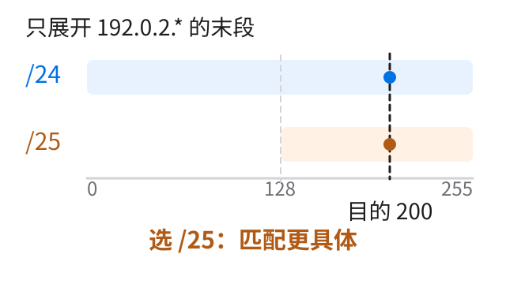
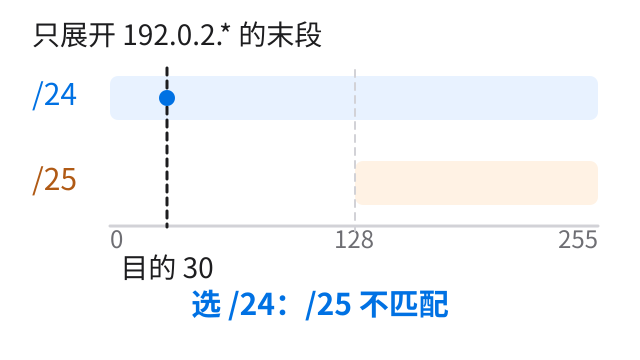
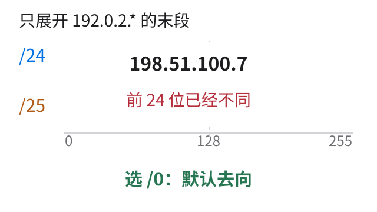
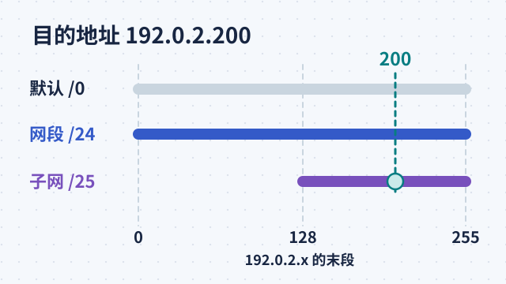

笔记本同时连着有线网和无线网，同样是向外发送一个 IP 包，去不同地址时可能会选到不同网卡。路由表记录的就是这些选择。弄懂一个斜杠后面的数字，就能解释为什么默认网关有时根本用不上。
路由表中的地址表示一段范围
IPv4 地址共 32 位，写成四个十进制数只是方便阅读。前缀长度指定从左往右有多少位需要匹配。比如 192.0.2.0/24 的前 24 位固定，范围从 192.0.2.0 到 192.0.2.255。192.0.2.128/25 多固定了一位，只覆盖最后一个数从 128 到 255 的一半地址。
怎样看出 128 这个分界？把末段写成八位二进制，127 是 01111111，128 是 10000000。/25 已经固定前三个八位组，还固定末段的最高位为 1，因此末段最高位为 0 的地址不在这个子网内。这种按位计算同样适用于不落在点号边界的其他前缀。
一条路由除了前缀，还说明接下来怎样发送。标注直连时，目的地就在对应链路上。写有 via 时，下一跳是出口链路上负责继续转发的路由器。IP 包的最终目的地址仍是远端主机，下一跳只回答本机应把这一步交给谁。
默认路由常写作 0.0.0.0/0。要比较的前缀长度为零，所以任意 IPv4 目的地址都能匹配。这使它适合作为最后的去向。它的存在说明系统有一个兜底选择，并不能保证那个网关当前可达。
手算一次最长前缀匹配
假设同一张路由表有三条记录。默认路由交给无线网关，192.0.2.0/24 走有线口，192.0.2.128/25 指向另一个实验接口。现在向 192.0.2.200 发包，先写出每个前缀能覆盖的范围。200 属于上半段，因此这三条全部匹配。
从匹配项中取前缀最长的 /25。向 192.0.2.30 发包时，30 落不到 /25 的范围，/24 就成了最长匹配。再向 198.51.100.7 发包，两个具体前缀都不匹配，才使用 /0。把三行的显示顺序调换，推算不会因此改变。
用地址范围看最长前缀
在同一张表中放入 /0、192.0.2.0/24 和 192.0.2.128/25。图把后两条覆盖的末段地址画成横条。

200 同时落入两段
查看大图
先看目的地址 192.0.2.200。蓝条覆盖末段 0 到 255，橙条只覆盖 128 到 255，竖线都能穿过，所以 /24 与 /25 同时匹配。默认路由 /0 也匹配所有 IPv4 地址。此时要比较的是匹配前缀的长度，不能因为先看到蓝条就立刻选它。

换成 30 再判断
查看大图
把目的地址改为 192.0.2.30，竖线仍落在蓝条内，却位于橙条左边。/25 此时不是优先级较低，而是根本不匹配。剩下 /24 和 /0，最长匹配变成 /24。这个过程是在筛选地址范围，路由表显示的上下顺序不会改变范围是否包含目的地址。

具体前缀都不匹配
查看大图
现在目的地址是 198.51.100.7，连前面固定的 192.0.2 都不同，就不应把最后一段的 7 放到这把尺上比较。两条具体路由都被排除，才轮到默认路由 /0。这里假设已选定同一张路由表；有策略路由时，还需要先判断应查哪张表。
先排除不匹配的范围，再在匹配项中选最长前缀。只有仍然存在同等匹配时，才继续按实际路由规则比较优先级等条件。
小练习：192.0.2.127 与 192.0.2.128 分别命中哪一条最长前缀？
127 在 /25 的下界之外，选 /24；128 恰好进入 /25 范围，选 /25。这里的范围包含端点，是否能作普通主机地址是另一项子网约定。
同样长度、同样目的范围的路由之间，优先级和多路径等设置才会起作用。常见的 metric 越小优先级越高。把一条默认路由的 metric 调得很小，仍然无法在同一张表中胜过已经匹配的 /25。读表时先把前缀这一步算完，才有必要比较优先级。


Linux 还要先决定查哪张表
常见配置主要使用主路由表。系统也能够根据源地址、进入的接口、数据包标记等条件执行策略路由。因此，“最长前缀”必须连同所选择的路由表理解，不能先把所有表里的路由混成一张清单。
查询这个目的地址时，先列出会参与决策的规则，再观察内核计算的出口。两条命令都只读当前网络状态，不会添加或删除路由。若本机未配置示例前缀，得到的结果反映本机现状，与上图的假设表不同完全合理。
在 Linux 上可以用只读命令 ip rule show 查看规则与优先级，再用 ip route get 192.0.2.200 询问内核对指定目标会怎么走。返回的 dev 是出口接口，via 表示经过的下一跳，src 是为该查询选出的源地址。直连目标可能没有 via，这是有意义的结果。
查询应尽量贴近看到故障的应用。例如应用绑定了某个源地址，而终端做的查询让系统自动选择源地址，两次可能命中不同规则。比较结果时同时记目的、源、网络命名空间和查询时刻，避免在容器外读到宿主机的另一套路由。
ip rule show
ip route get 192.0.2.200把选路与通信分开验证
先选两个目的地址，把你预测的最长匹配写在纸上，再去读本机已有的路由。没有示例里的网段也不要紧，把示例换成本机一条直连前缀和一个外部地址。这个练习只查询，不需要改动正在工作的网络设置。
当内核选出的出口符合预期，连接仍可能失败。接下来才检查链路是否可用、能否解析下一跳的链路层地址、远端服务是否监听，以及回程路由是否成立。单次 ping 没有回应也可能是对方过滤了 ICMP。它与“本机选错接口”是两种不同现象。